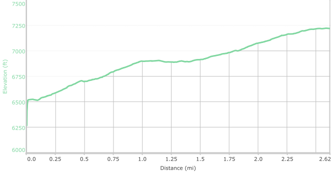

Hike New Mexico
w/ Tom & Ken
Birdhouse Ridge Hike



- Jul 19, 2015: Trail traverses the heights
- Jul 19, 2015: Ascending Birdhouse provides higher views
- Jul 19, 2015: Nice view of Sandias other side
- Jul 19, 2015: A flat top provides 360 degree views
- Jul 19, 2015: Birdhouse links to Tunnel Canyon
- https://www.flickr.com/photos/139088815@N08/26730108334/in/photostream/
- https://www.flickr.com/photos/139088815@N08/27337071995/in/photostream/
- https://www.flickr.com/photos/139088815@N08/27303759226/in/photostream/
- https://www.flickr.com/photos/139088815@N08/27303791516/in/photostream/
- https://www.flickr.com/photos/139088815@N08/27303750976/in/photostream/
The Cibola National Forest, near Tijeras, has multiple trails available for hiking/biking and jogging in the Manzanita Mountains. The trailheads are generally immediately on, or just off of Highway 337. It is generally listed online as a biking trail, but it also makes for a nice hike and provides some very good vistas. It is interconnected with other trails, such as Tunnel Canyon and Otero Canyon, so hikes can be made roundtrip and of different lengths. There are not many good online references, and no references have been noted in any of the authors' hiking books.